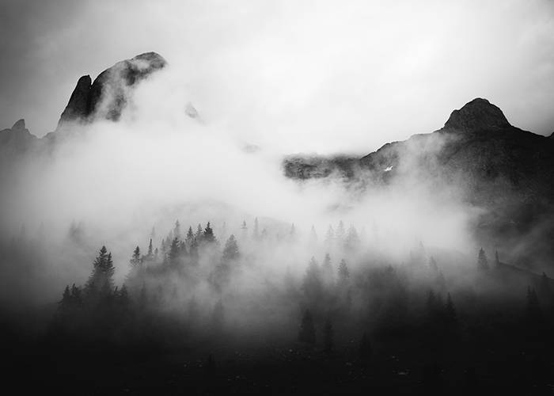
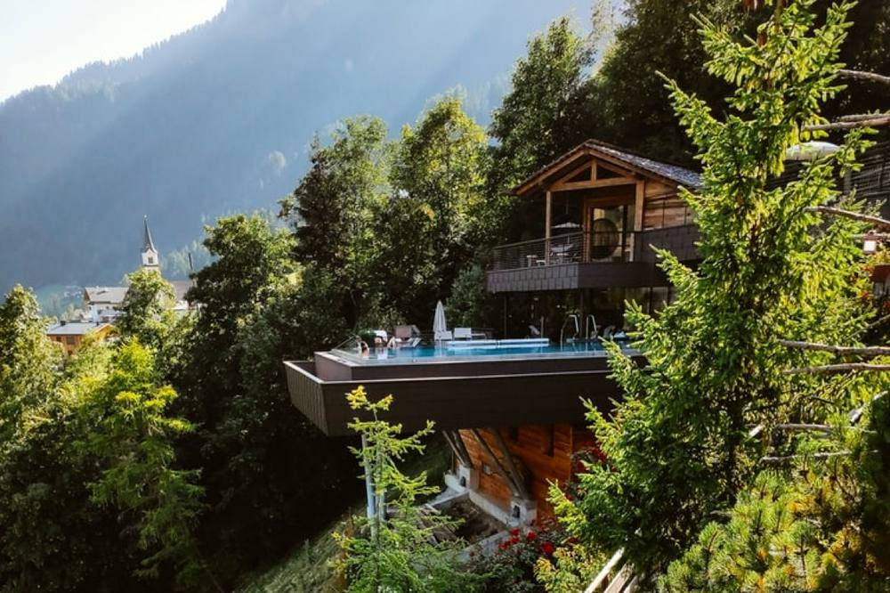
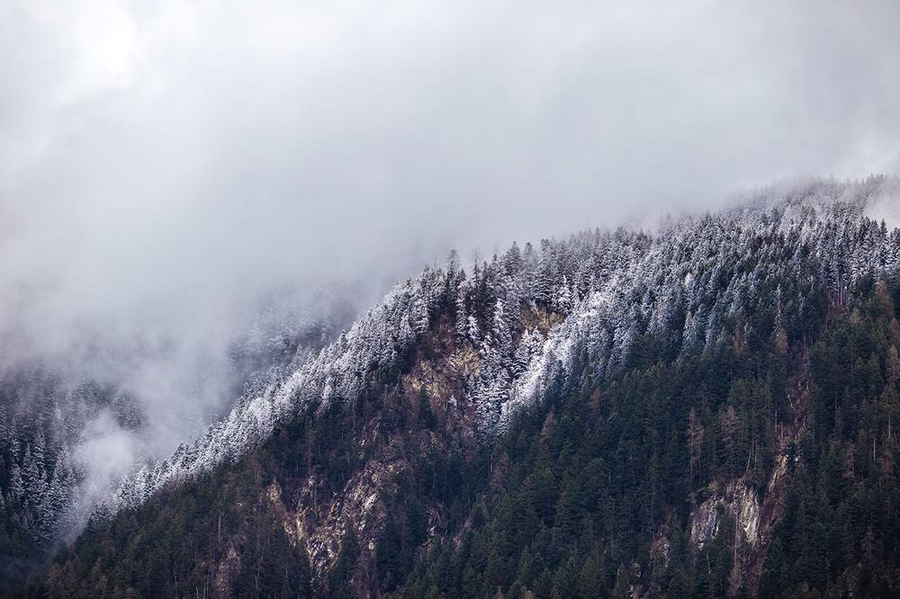
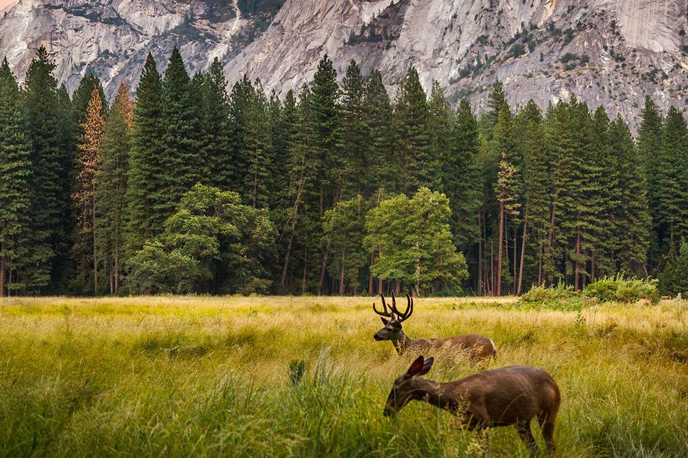
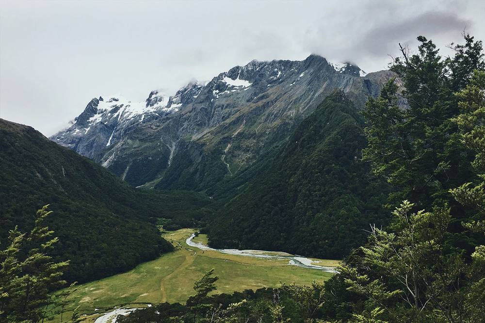

Fjellro is a small collection of four cabins on a south-facing slope above the Driva valley. There’s no reception, no restaurant and no Wi-Fi in the cabins — just wood stoves, good beds, a kitchen, and a lot of mountain.
We built them in 2019 with local timber and a local builder, and we run them as a family: Ingrid looks after bookings and the garden, Henrik after the buildings and the trails. Fresh bread and eggs from the farm below are left at your door on the first morning.

All cabins have a wood stove, a fully equipped kitchen, bed linen and towels. Dogs welcome in Bjørk and Furu.

Sleeps 4 · 2 bedrooms · terrace with view over the valley
from NOK 1 650 / night
Sleeps 2 · loft bed · closest to the ski track
from NOK 1 250 / night
Sleeps 6 · 3 bedrooms · meadow, firepit and wildlife at dusk
from NOK 2 100 / night
Sleeps 2 · panoramic windows · sauna by the stream
from NOK 1 450 / night“We arrived in the rain and left in the sun, but I’d happily have stayed for the rain.”
— Guest book, September
Getting here and what to bring.
Tell us your dates and we’ll confirm availability by email within a day.